记得住你说过的每件事，能写代码、比价、看股票、写论文、做研究；做错了自己归因、自己长技能；用老师轨迹做 SFT、用可验证奖励做 GRPO，再靠线上反馈转数据飞轮。一个项目，把 Agent 岗位 JD 里的记忆、Agent Loop、模型网关、Coding Agent、自进化、后训练全部打通。
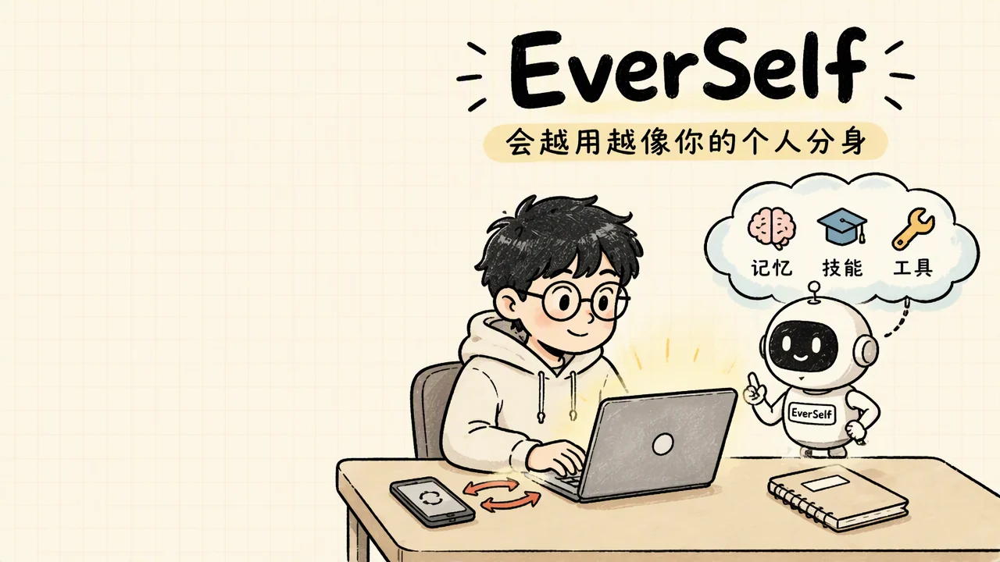
今年阿里、字节、腾讯的 Agent 岗位 JD，要的不再是“会调 API”，而是一整套：记忆系统、Agent Loop、模型网关、Coding Agent、自进化、后训练和数据飞轮。这些东西零散地学，很难串成一段能讲清楚的项目经历，所以我们把它们做成了一个项目。
简单来说，EverSelf 是一个住在你自己电脑上的个人分身。你说过的话、让它做过的事，它都记着；下次干活直接用上；做错的事变成技能，下次不再犯；用得越多，它越像你。
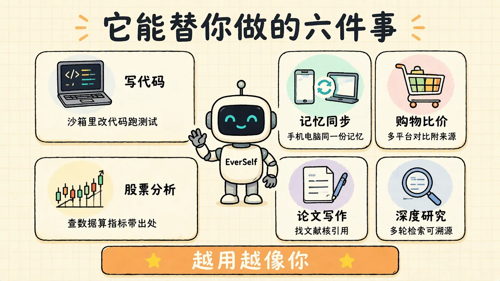
整个项目可以从四个维度来理解：
记忆怎么写、怎么存、怎么想起来、什么时候该忘。
Agent Loop、工具调用、沙箱、长任务续跑、模型网关。
自进化长技能；老师轨迹做 SFT，可验证奖励做 GRPO。
证伪账本、固定评测集、三臂对比、置信区间。
你今天在 A 工具里跟 AI 聊了半小时：做电商项目、用 Python、不喜欢过度封装。明天换到 B 工具，一切从头讲。后天让它帮你比价买键盘，它又忘了你说过预算 500、只要静音轴。
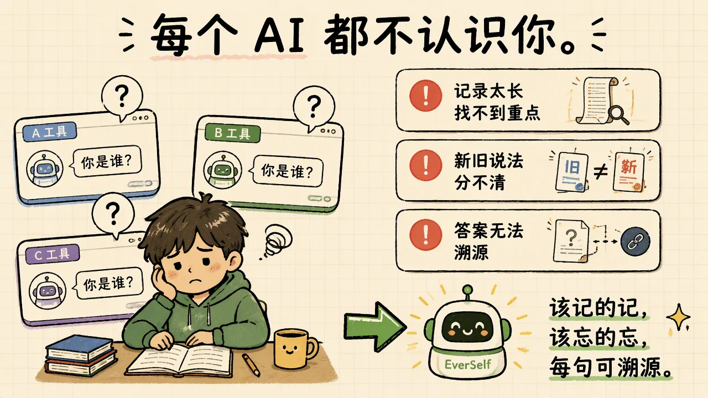
直接把聊天记录全塞给大模型行不行？可以，但有三个问题：记录一长找不到重点；半年前说“用 Vue”后来改成 React，它分不清哪句是最新的；它答了一句话，你不知道依据是哪条记忆。
再往后还有更难的：任务跑到一半进程被杀了怎么办？它做错的事怎么保证下次不再错？怎么证明它真的变好了而不是碰巧？这些问题，一个成熟的 Agent 产品都要回答。EverSelf 就是把这些答案做成了代码。
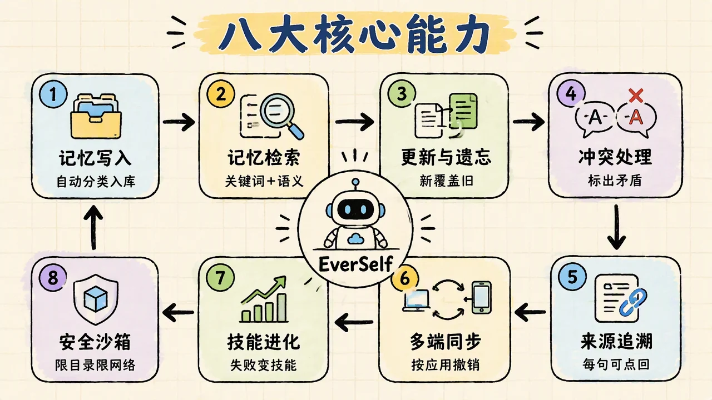
整个系统分五层，口诀是：先记住，再做事，错了就学，学完要验。
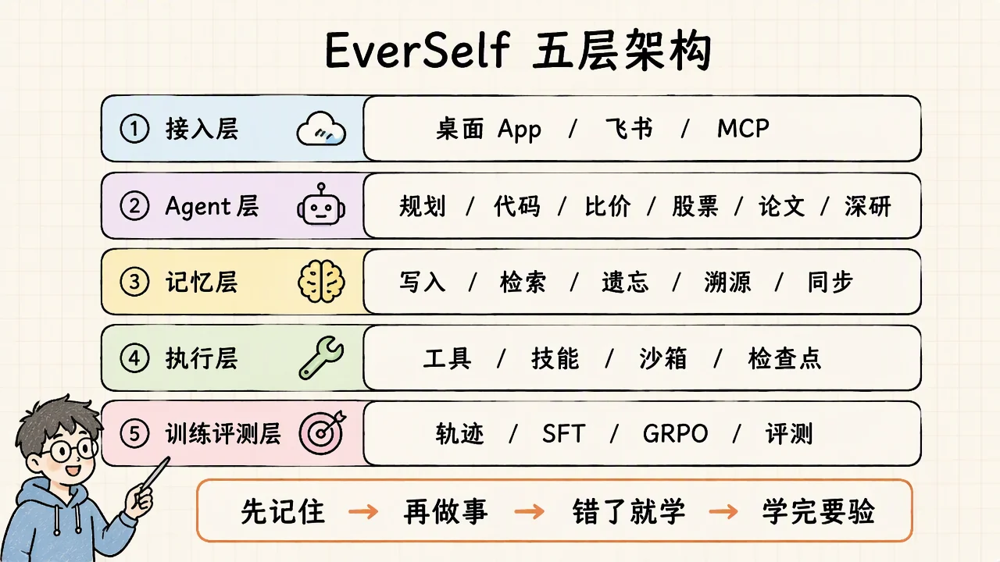
桌面 App、飞书、MCP 接口。你从哪里跟它说话，它都认得你。
先判断你要做什么，拆成几步，再分发给代码、比价、股票、论文、深度研究这几类场景 Agent。
写入、检索、遗忘、溯源、同步都在这一层，所有 Agent 共用同一份记忆。
模型网关、工具调用、技能库、沙箱、检查点。任务跑到一半被打断，能从上一步接着来。
收集执行轨迹，筛出做对的，让小模型学（SFT），再用可验证的奖励继续训练（GRPO）；线上反馈回流成数据飞轮；每一轮都用固定评测集和证伪账本验收。
比如你说：“帮我给上次那个电商项目加个优惠券功能。”
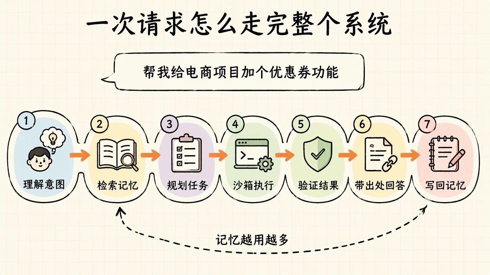
JD 里那串词：Agent Loop、任务分解、多轮工具调用、上下文构造、状态管理、失败恢复、结果验证、Tracing、实验评估。它们不是九个独立知识点，而是一个循环里的九个位置。
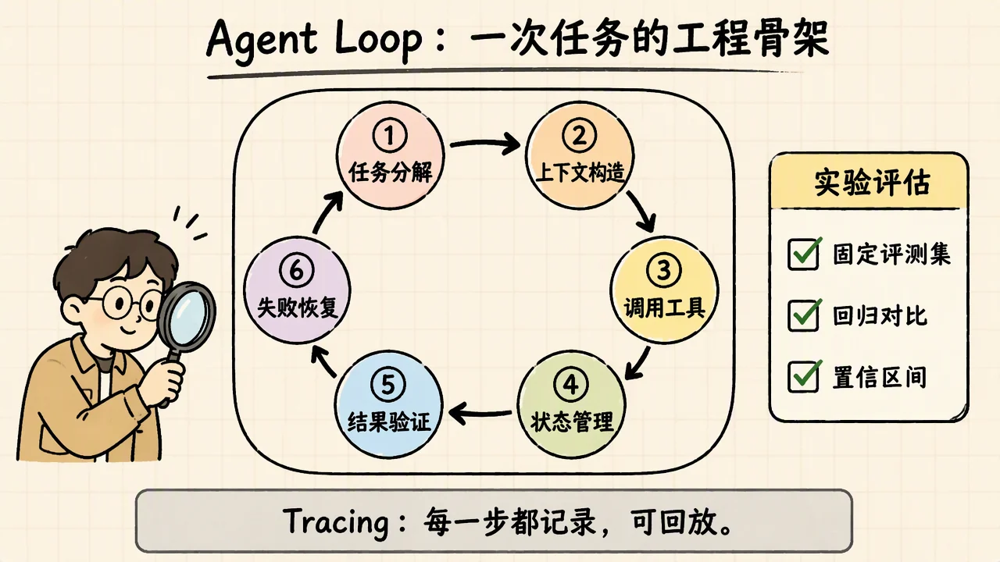
所有 Agent 不直接调模型 API，统一走一个网关。JD 里的“LLM 应用研发技术栈”，说的就是这个网关要做的事。
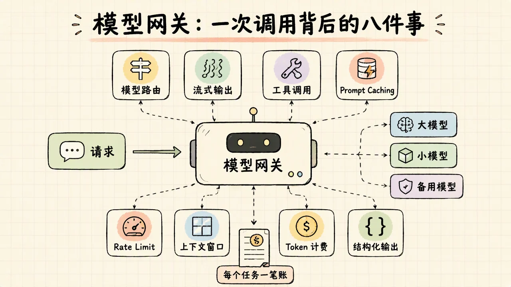
| 机制 | EverSelf 怎么做 |
|---|---|
| 模型路由 | 意图识别、记忆分类走小模型；规划、写代码走大模型；某个模型不可用自动降级 |
| 流式输出 | 边生成边显示；工具调用中途也能看到“正在读 orders.py” |
| 工具调用 | 统一的工具协议，模型输出结构化调用，网关校验参数后执行 |
| Prompt Caching | 系统提示、技能说明这类固定前缀只算一次钱 |
| Rate Limit | 按应用、按用户限流，超限排队重试，不让一个任务吃光配额 |
| 上下文窗口 | 网关知道每个模型的窗口大小，超了先压缩再发 |
| Token 计费 | 每个任务一笔账，看得到哪一步最贵；按用户出配额 |
| 结构化输出 | 要求模型按 schema 返回，格式不对自动重试 |
JD 里常见一句：“针对低延迟高频请求和长任务 Agent 请求设计差异化的系统架构”。这两种请求的脾气完全不同，硬塞进一套架构里，两边都做不好。
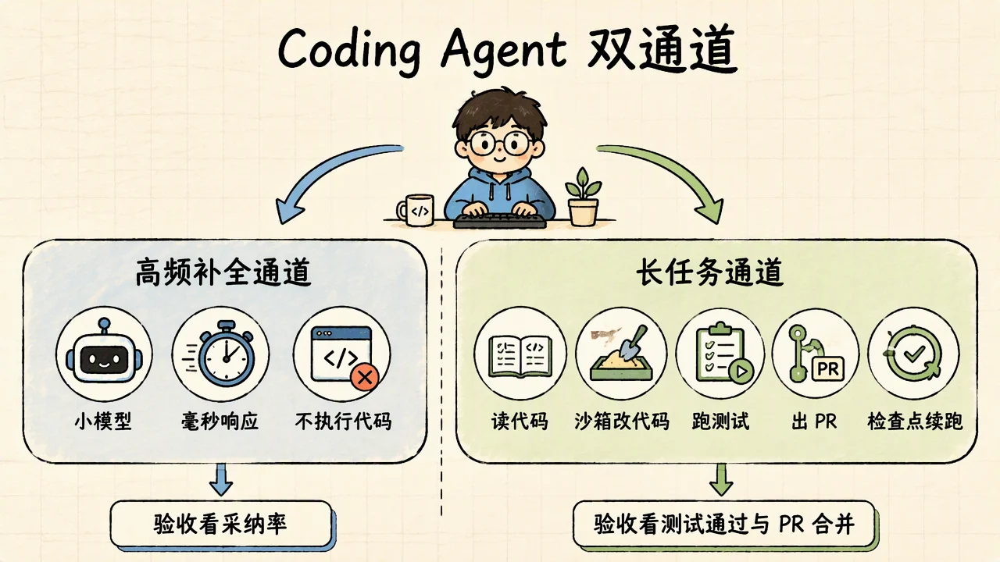
| 高频补全通道 | 长任务通道 | |
|---|---|---|
| 你在等什么 | 敲一个字就要出结果，百毫秒级 | 可以等几分钟，但不能出错 |
| 用什么模型 | 小而快，走 Prompt Caching | 大而强，带工具 |
| 要不要沙箱 | 不执行代码 | 必须：读代码、改代码、跑测试、出 PR |
| 断了怎么办 | 重来一次就行 | 从检查点恢复，工作区快照重放 |
| 怎么验收 | 采纳率 | 测试通过、PR 能合并 |
长任务通道从读代码到出 PR 全流程走通，每次任务的轨迹（看了什么、改了什么、测试结果）都进训练评测层，这就是后面“老师示范”的数据来源。
“自进化”听起来玄，拆开就是一个循环：跑任务 → 失败归因 → 提出改法 → 证伪检验 → 通过才启用。难的不是前三步，是后两步：怎么防止它把“碰巧变好”当成“真的变好”。
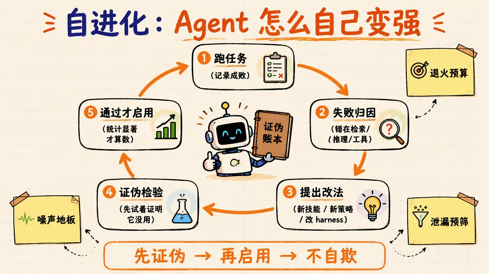
大模型很强，但它不知道你的记忆系统怎么用。靠提示词写规则很脆弱，更稳的办法是让小模型把这套行为学会。老师是大模型，教材是它跑出来的轨迹。
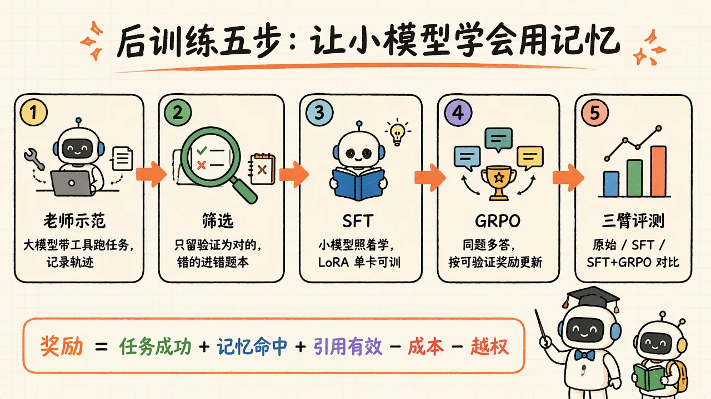
训练不是一次性的。真正的数据来源是线上用户：采纳了什么、打回了什么、改了哪里。JD 里的“Online User Data Flywheel”和“Scaling Law”，说的就是这套循环怎么持续转。
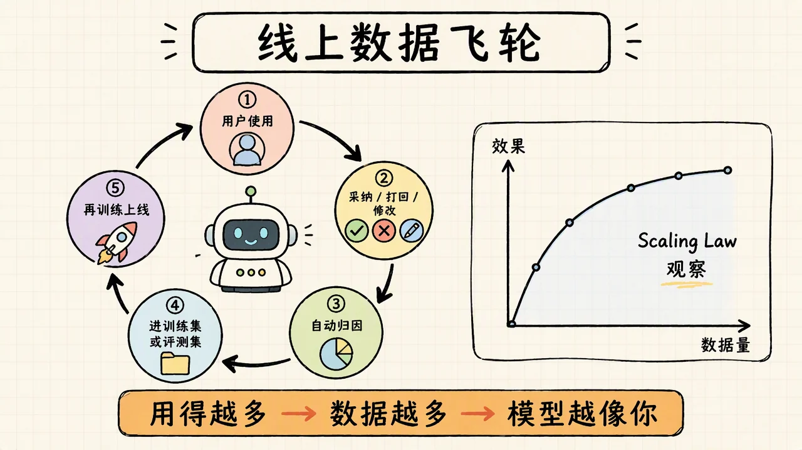
任务规划、长期记忆、多 Agent 协同、RAG；Durable Execution 长任务框架、沙箱、Skills 与 MCP；评测飞轮，微调与强化学习。查看岗位原文 →
十四项能力，每一项都对应一个你亲手写的模块：
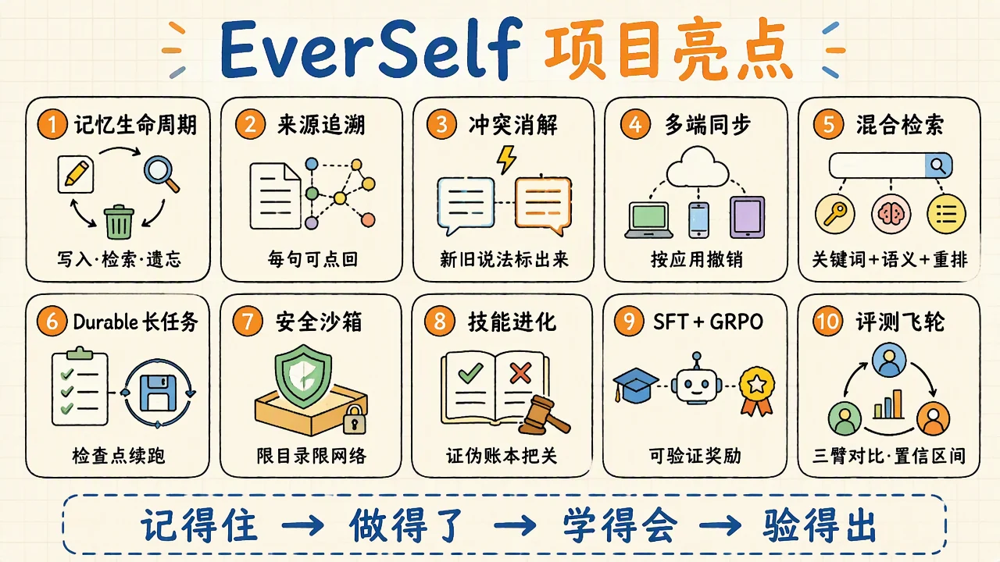
新旧冲突、时间顺序、溯源，相似度解决不了。检索之外再加一层冲突与时效判断。
JD：记忆生命周期考点：混合检索证伪账本 + 噪声地板：先测同版本两次的差异，低于它的提升不算；新改动先试着推翻它。
JD：自进化考点：统计显著性每步存检查点，非幂等工具用工作区快照重放；在随机时刻注入 kill，对比恢复后与不中断运行是否逐字节一致。
JD：Durable Execution考点：检查点、幂等只靠摘要会静默丢数字。把用户说的数字、日期、偏好逐字固定成一个块，摘要器永远碰不到。
JD：上下文工程考点：压缩与保真可验证奖励 + 过程奖励校准 + reward hacking 告警：故意钻空子的样例给了高分就先改奖励。
JD：强化学习考点：reward hacking延迟、模型、沙箱、恢复、验收标准全都不同。
JD：Coding Agent考点：系统设计注入检测加沙箱：即使被骗，也只能在受限目录里动，不能联网外传。
JD：沙箱安全考点：Prompt Injection采纳、修改、打回分三条通道；打回的先归因，再决定进训练集还是评测集。
JD：数据飞轮考点：数据闭环| 层 | 技术 |
|---|---|
| 语言 | Python（内核、Agent、训练）、TypeScript（前端） |
| 前端 | Next.js |
| 记忆内核 | 分块、BM25 + 向量混合检索、重排、溯源、撤销、多端同步 |
| Agent 与执行 | Agent Loop、模型网关、工具协议、Landlock 沙箱、检查点续跑、MCP |
| 自进化 | 证伪账本、退火预算、泄漏预筛、噪声地板、统计检验 |
| 训练 | LoRA、SFT、在线策略蒸馏、过程奖励、GRPO、vLLM 推理 |
| 评测 | 固定评测集、动态评测集、三臂对比、回归基线、置信区间 |
写入、检索、更新、遗忘、溯源、同步，每一步为什么这样设计。
Agent Loop、模型网关八件事、Coding Agent 双通道、检查点、沙箱。
Teacher rollout → 拒绝采样 → SFT → OPD → PRM → GRPO，说清每一步的取舍。
证伪账本、噪声地板、回归基线、可验证奖励、置信区间。
能。每个术语第一次出现都有大白话解释。建议顺序：先跑通记忆内核，再看 Agent Loop 和网关，然后自进化，最后训练。
自进化改的是技能、策略和 harness，不动模型权重，几分钟一轮；后训练改的是模型权重，几小时一轮。两者共用一套评测和证伪规则。
不会。只做数据查询和分析，结论带出处，不接交易接口。
项目给你一套可复现的比价流程：怎么采集、怎么对比、怎么给每个价格标来源。平台范围由你扩展。
自进化最容易自己骗自己：测几次碰巧变好就说有效。账本强制先试着证明“没用”，证明不了才算数。
当前版本以文本记忆为主，多模态记忆是后续扩展方向。